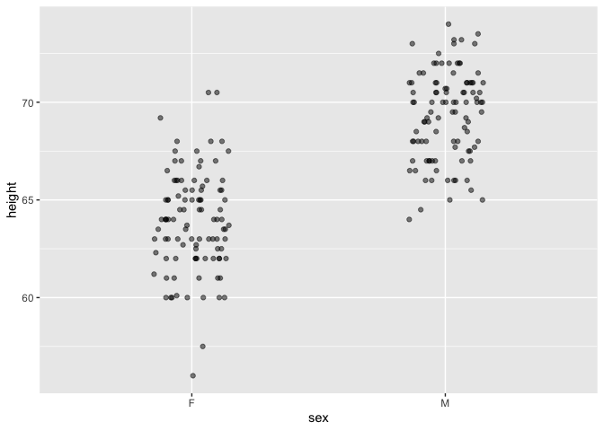
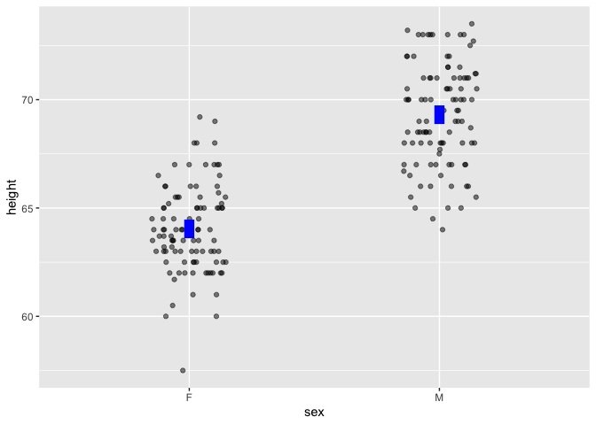
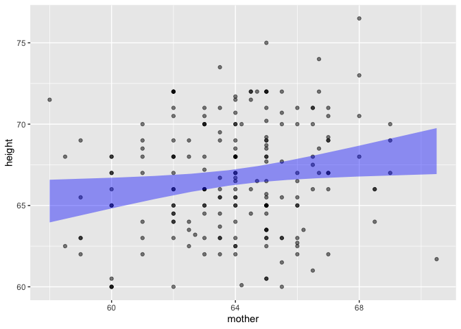

The LSTbook package provides software and datasets for Lessons in Statistical Thinking.
Installation
Version 0.6 of LSTbook was released on CRAN by February 2024. Note that previous versions did not include the take_sample() function, which is used extensively in Lessons. The CRAN version is also published for use with webr (as are most CRAN packages).
For more recent updates:
# install.packages("devtools")
devtools::install_github("dtkaplan/LSTbook")Via r-universe.dev: https://dtkaplan.r-universe.dev/LSTbook
In the YAML for a webr document, refer to the repository thus under the
webrindex:repos: ["https://dtkaplan.r-universe.dev"]
Overview
The LSTbook package has been developed to help students and instructors learn and teach statistics and early data science. LSTbook supports the 2024 textbook Lessons in Statistical Thinking, but instructors may want to use LSTbook even with other textbooks.
The statistics component of Lessons may fairly be called a radical innovation. As an introductory, university-level course, Lessons gives students access to important modern themes in statistics including modeling, simulation, co-variation, and causal inference. Data scientists, who use data to make genuine decisions, will get the tools they need. This includes a complete rethinking of statistical inference, starting with confidence intervals very early in the course, then gently introducing the structure of Bayesian inference. The coverage of hypothesis testing has greatly benefited from the discussions prompted by the American Statistical Association’s Statement on P-values and is approached in a way that, I hope, will be appreciated by all sides of the debate.
The data-science part of the course includes the concepts and wrangling needed to undertake statistical investigations (not including data cleaning). It is based, as you might expect, on the tidyverse and dplyr.
Some readers may be familiar with the mosaic suite of packages which provides, for many students and instructors, their first framework for statistical computation. But there have been many R developments since 2011 when mosaic was introduced. These include pipes and the tidyverse style of referring to variables. mosaic has an uneasy equilibrium with the tidyverse. In contrast, the statistical functions in LSTbook fit in with the tidyverse style and mesh well with dplyr commands.
The LSTbook function set is highly streamlined and internally consistent. There is a tight set of only four object types produced by the LSTbook computations:
- Data frames
- Graphic frames (ggplot2 compatible but much streamlined)
- Models, which are summarized to produce either data frames or graphic frames.
- Data simulations (via DAGs) which are sampled from to produce data frames
Vignettes provide an instructor-level tutorial introduction to LSTbook. The student-facing introduction is the Lessons in Statistical Thinking textbook.
Statistics for data science
Every instructor of introductory statistics is familiar with textbooks that devote separate chapters to each of a half-dozen basic tests: means, differences in means, proportions, differences in proportions, and simple regression. It’s been known for a century that these topics invoke the same statistical concepts. Moreover, they are merely precursors to the essential multivariable modeling techniques used in mainstream data-science tasks such as dealing with confounding.
To illustrate how LSTbook supports teaching such topics in a unified and streamlined way, consider to datasets provided by the mosaicData package: Galton, which contains the original data used by Francis Galton in the 1880s to study the heritability of genetic traits, specifically, human height; and Whickham results from a 20-year follow-up survey to study smoking and health.
Start by installing LSTbook as described above, then loading it into the R session:
In the examples that follow, we will use the LSTbook function point_plot() which handles both numerical and categorical variables using one syntax. Here’s a graphic for looking at the difference between two means.
Galton |> point_plot(height ~ sex)
Point plots can be easily annotated with models. To illustrate the difference between the two means, add a model annotation:
Galton |> point_plot(height ~ sex, annot = "model")
Other point_plot() annotations are violin and bw.
In Lessons, models are always graphed in the context of the underlying data and shown as confidence intervals.
The same graphics and modeling conventions apply to categorical variables:
Whickham |> point_plot(outcome ~ smoker, annot = "model")
Simple regression works in the same way:
Galton |> point_plot(height ~ mother, annot = "model")
Whickham |> point_plot(outcome ~ age, annot = "model")
The syntax extends naturally to handle the inclusion of covariates. For example, the simple calculation of difference between two proportions is misleading; age, not smoking status, plays the primary role in explaning mortality.
Whickham |> point_plot(outcome ~ age + smoker, annot = "model")
NOTE: To highlight statistical inference, we have been working with an n=200 sub-sample of Galton:
Galton <- Galton |> take_sample(n=100, .by = sex)Quantitative modeling has the same syntax, but rather than rely on the default R reports for models, LSTbook offers concise summaries.
Whickham |> model_train(outcome ~ age + smoker) |> conf_interval()
#> Waiting for profiling to be done...
#> # A tibble: 3 × 4
#> term .lwr .coef .upr
#> <chr> <dbl> <dbl> <dbl>
#> 1 (Intercept) -8.50 -7.60 -6.77
#> 2 age 0.110 0.124 0.138
#> 3 smokerYes -0.124 0.205 0.537To help students develop an deeper appreciation of the importance of covariates, we can turn to data-generating simulations where we know the rules behind the data and can check whether modeling reveals them faithfully.
print(sim_08)
#> Simulation object
#> ------------
#> [1] c <- rnorm(n)
#> [2] x <- c + rnorm(n)
#> [3] y <- x + c + 3 + rnorm(n)
dag_draw(sim_08)
From the rules, we can see that y increases directly with x, the coefficient being 1. A simple model gets this wrong:
sim_08 |>
take_sample(n = 100) |>
model_train(y ~ x) |>
conf_interval()
#> # A tibble: 2 × 4
#> term .lwr .coef .upr
#> <chr> <dbl> <dbl> <dbl>
#> 1 (Intercept) 2.75 3.01 3.27
#> 2 x 1.14 1.32 1.51I’ll leave it as an exercise to the reader to see what happens when c is included in the model as a covariate.
Finally, an advanced example that’s used as a demonstration but illustrates the flexibility of unifying modeling, simulation, and wrangling. We’ll calculate the width of the x confidence interval as a function of the sample size n and averaging over 100 trials.
sim_08 |>
take_sample(n = sample_size) |>
model_train(y ~ x) |>
conf_interval() |>
trials(times = 2, sample_size = c(100, 400, 1600, 6400, 25600)) |>
filter(term == "x") |>
mutate(width = .upr - .lwr)
#> .trial sample_size term .lwr .coef .upr width
#> 1 1 100 x 1.372233 1.560350 1.748467 0.37623423
#> 2 2 100 x 1.332790 1.490733 1.648677 0.31588668
#> 3 1 400 x 1.421812 1.505607 1.589403 0.16759077
#> 4 2 400 x 1.499239 1.580337 1.661436 0.16219628
#> 5 1 1600 x 1.424356 1.466122 1.507888 0.08353176
#> 6 2 1600 x 1.436348 1.477919 1.519491 0.08314316
#> 7 1 6400 x 1.474246 1.494887 1.515529 0.04128310
#> 8 2 6400 x 1.487190 1.508327 1.529465 0.04227480
#> 9 1 25600 x 1.495289 1.505822 1.516355 0.02106636
#> 10 2 25600 x 1.498624 1.509280 1.519937 0.02131267I’ve used only two trials to show the output of trials(), but increase it to, say, times = 100 and finish off the wrangling with the dplyr function summarize(mean(width), .by = sample_size).